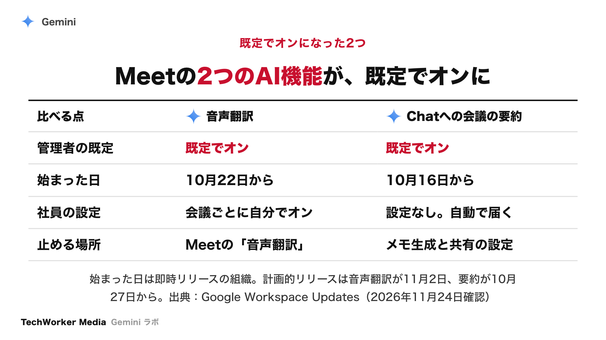
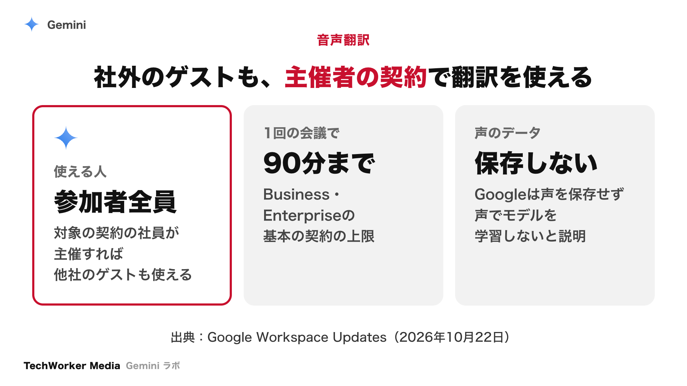
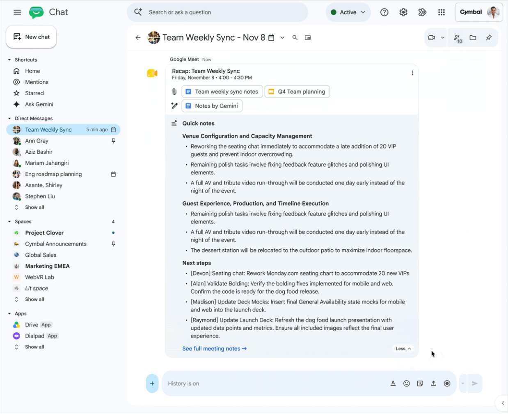
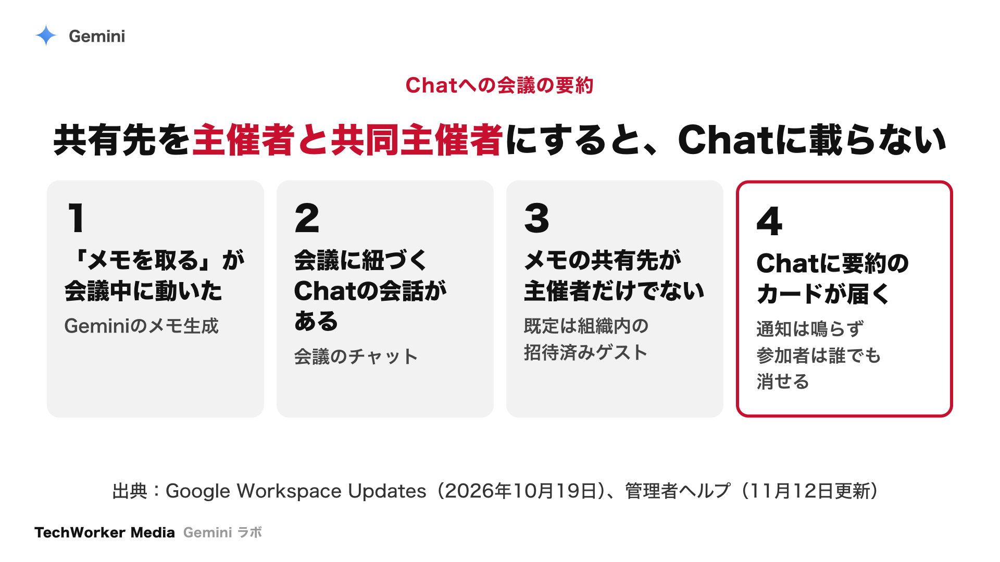

Google MeetのGeminiの2つの機能が、2026年10月から、対象のGoogle Workspaceで既定でオンになりました。会議の声をその場で訳す音声翻訳と、会議の後にGoogle Chatへ届く会議の要約です。
- 音声翻訳：63の言語に対応し、日本語も含みます。対象の契約の社員が主催すれば、社外のゲストも使えます。管理者は組織部門かグループの単位で止められます。
- Chatへの会議の要約：Geminiのメモ生成を使った会議の後、会議に紐づくChatの会話に要約が自動で載ります。社員の側で止める設定はありません。
- 管理者が決めること：社外との会議で翻訳を使わせるかと、会議のメモと要約を誰に見せるかの2つです。
Google Workspace Updatesの2つの発表と、管理者向けのヘルプ（2026年11月24日確認）をもとに、設定の場所と決め方をまとめます。
Meetで何が既定でオンになりましたか？
音声翻訳と、Chatへの会議の要約の2つです。どちらも管理者の側で既定でオンで、計画的リリースの組織でも11月上旬までに展開が始まっています。

音声翻訳の発表は管理者の既定を次のように書いています。
原文“Speech translation is ON by default for eligible Google Workspace editions (when the Gemini for Meet admin setting is enabled) and can be disabled or enabled at the organizational unit (OU) or group level in the Admin console under Apps > Google Workspace > Google Meet > Gemini settings.”
日本語訳音声翻訳は、対象のGoogle Workspaceのエディションで既定でオンです（MeetのGeminiの管理者設定がオンの場合）。管理コンソールの［アプリ］＞［Google Workspace］＞［Google Meet］＞［Gemini の設定］で、組織部門かグループの単位でオフにもオンにもできます。
| 機能 | 即時リリースの組織 | 計画的リリースの組織 | 対象のエディション |
|---|---|---|---|
| 音声翻訳 | 10月22日から（1〜3日で表示） | 11月2日から（最長15日） | Business Standard・Plus、Enterprise Standard・Plus、Frontline Plus、Google AI Pro for Educationなど |
| Chatへの会議の要約 | 10月16日から（最長15日） | 10月27日から（最長15日） | Business Standard・Plus、Enterprise Standard・Plus、Frontline Plus |
出典：Google Workspace Updates（2026年10月22日、10月19日）、いずれも2026年11月24日確認
どちらの対象にも、Business Starterは挙がっていません。11月10日からはGmailの要約とHelp me writeも既定でオンになりました。止め方はGmailのGeminiが既定でオンにで扱っています。
音声翻訳で管理者が確かめることは何ですか？
社外のゲストも主催者の契約で翻訳を使えること、基本の契約では1回の会議で90分までであること、声のデータを保存しないと説明されていることの3つです。そのうえで、社外との会議で使わせるかを決めます。

原文“Speech translation is available to all meeting participants, including guests from other domains, when the meeting is organized by a user with an eligible Google Workspace or Google AI plan.”
日本語訳対象のGoogle WorkspaceかGoogle AIのプランを持つ人が主催する会議では、他のドメインのゲストを含む参加者全員が音声翻訳を使えます。
発表とMeetのヘルプに書かれた条件は、次のとおりです。
- 言語：63の言語に対応し、ヘルプの一覧に日本語があります。話している言語を自動で見分け、聞く人ごとに選んだ言語へ訳します。
- 使い始め：会議の始めはオフです。参加者がそれぞれ、ツールバーの翻訳のボタンから自分でオンにします。
- 時間の上限：Business・Enterpriseの基本の契約とGoogle AI Proは1回の会議で90分、AI Expanded Access・AI Ultra Access・Google AI Ultraは8時間です。
- 使えない場面：ライブ配信、会議の録画、クライアントサイド暗号化（CSE）の会議、電話での参加、他社の会議システムとの相互接続、適応型音声（adaptive audio）を使うときです。
- 会議室：Meetのハードウェアの会議室では、訳された声は聞けますが、会議室からの声は訳されません。
- 声のデータ：Googleは声のデータを保存せず、声でモデルを学習しないと書いています。
社外の取引先との会議でも、自社の社員が主催すれば、相手は翻訳を使えます。TechWorkerは、訳の誤りがそのまま相手に伝わることを避けるため、翻訳を使う商談や契約の会議では、金額や納期などの条件を文字でも確かめる、と社内の決まりに書くことを勧めます。
Geminiの各エディションの料金はGeminiの法人契約と料金にまとめています。主要4社の料金比較表と、社内利用ルールの雛形は、下の枠から受け取れます。
Chatに届く会議の要約とはどんな機能ですか？
会議の後、要約、決まったこと、担当者つきの次の作業、メモや録画へのリンクを、会議に紐づくChatの会話にカードで載せる機能です。会議に出られなかった会話のメンバーも、カードで内容を追えます。

出典：Google「Google Workspace Updates」（Follow through on your meeting tasks with meeting recaps in Google Chat）の画面（2026年11月24日に撮影）
2026年10月19日の発表によると、カードには次の4つが入ります。
- 会議の要約：話し合った主な話題と結論
- リンク：Geminiのメモの文書、会議の録画、文字起こし
- 決まったこと：会議で合意した結論
- 次の作業：担当者を付けた、次にやること
カードは会話を太字にせず、未読の印も付けずに届きます。会話の参加者なら誰でも、カードのその他のオプションから削除できます。消してもメモの文書はGoogle ドライブに残ります。社員の側の設定について、発表は次のように書いています。
原文“There is no end-user setting for this feature. Meeting recaps will automatically appear in the meeting’s chat conversation once the call ends.”
日本語訳この機能に利用者の設定はありません。会議の要約は、通話が終わると会議のチャットの会話に自動で表示されます。
管理者向けには、Gemini for Google Workspaceがオンの組織で既定でオンになり、メモ生成とGeminiの既存の管理者設定に従う、と書かれています。要約のカードだけを止める専用の設定は、発表にも管理者ヘルプにも見当たりません。
会議の要約がChatに載るのはどんなときですか？
Geminiのメモ生成が会議中に動き、会議に紐づくChatの会話があり、メモの共有先が主催者と共同主催者だけでないときです。3つがそろうと、会議の後にカードが届きます。

原文“If the meeting host sets “Send notes to” in Google Meet to “Hosts and co-hosts only,” a recap card will not be posted to the group chat.”
日本語訳会議の主催者がGoogle Meetのメモの送り先を「主催者と共同主催者のみ」にすると、要約のカードはグループのチャットに載りません。
管理者はメモの既定の共有先を次の3つから選べます。主催者が会議中に共有先を変えられるかも、管理者が決めます。
- 招待されたすべてのゲスト：社外を含め、招待した全員がメモを開けます。
- 組織内の招待済みゲスト（既定）：招待した人のうち、自社の人だけがメモを開けます。
- 主催者と共同主催者：主催者と共同主催者だけがメモを開けます。
発表に書かれているのは、主催者が送り先を変えた場合です。管理者の既定を主催者と共同主催者にして、主催者が変えられないようにした場合も同じ扱いになるかは、発表にもヘルプにも書かれていません。この形にすると、ほかの参加者はメモを開けなくなります。試す組織部門で会議を1回開き、カードが載らないことを確かめてから広げる、というのがTechWorkerの提案です。
もう1つ、ヘルプはGeminiのメモ生成を、一度に1つの言語にだけ対応するとしています。会議で複数の言語が話される場合は動かない、と書かれています。2つの記載を合わせると、日本語と英語を訳し合う会議では、メモも要約のカードも作られない可能性があります。
管理コンソールのどこで変えますか？
どちらの設定も管理コンソールの［アプリ］＞［Google Workspace］＞［Google Meet］＞［Gemini の設定］にあります。変更は最長24時間で反映されます。
| 変えたいこと | ［Gemini の設定］の中の場所 | 選べること |
|---|---|---|
| 音声翻訳を止める | ［音声翻訳］ | ［会議の参加者全員の音声翻訳を有効にすることを許可します］のチェックを外す。組織部門かグループの単位 |
| メモ生成を止める（要約のカードも出ない） | ［Gemini のメモ生成機能］ | ［Gemini のメモ生成機能を会議で使用できるようにします］のチェックを外す |
| メモと要約を見せる相手を決める | ［Gemini メモの共有］ | 主催者が共有先を変えられるか。既定の共有先（招待されたすべてのゲスト／組織内の招待済みゲスト／主催者と共同主催者） |
出典：Google Workspace 管理者ヘルプ「Meet の音声翻訳を有効または無効にする」「Google Meet の AI がユーザーに代わってメモを作成できるようにする」（いずれも2026年11月12日更新、2026年11月24日確認）
設定を変えるには、Google Meetの管理者権限が要ります。組織部門とグループの両方で設定した場合は、グループの設定が優先されます。
メモの共有の設定が効くのは、Google カレンダーで予定を入れた会議だけです。予定を入れない即席の会議で招待した人がいない場合は、共有先は主催者と共同主催者だけになります。
管理者が今週決めることは何ですか？
社外との会議で翻訳を使わせるかと、会議のメモと要約を誰に見せるかを決め、社員に1枚で伝えます。
ここからはTechWorkerの提案です。公式の設定と条件から、決める項目を5つに分けました。
- 今の状態を確かめる：自社のエディションと、MeetのGeminiの設定がオンかどうかを、管理コンソールで見ます。
- 音声翻訳：社外との会議で使ってよいかを決めます。使うなら、金額や納期などの条件は文字でも確かめると書きます。
- メモの共有先：既定の組織内の招待済みゲストのままにするか、部署によって主催者と共同主催者にするかを決めます。
- Chatの会話の顔ぶれ：要約のカードは会話のメンバーが読めます。人事や評価の会議を、メンバーの多いChatの会話に紐づけないようにします。
- 社員への周知：カードは参加者なら消せること、消してもメモの文書はドライブに残ることを伝えます。
Geminiの会社アカウントの設定全体はGeminiの法人導入に、11月9日から既定でオンになったスキルの設定はGoogle Workspaceのスキルとはにまとめています。
Gemini で作るエージェントの例として、商談の前に取引先の下調べを1枚にまとめるエージェントと競合の公開情報を毎週出典つきの表にまとめるエージェントの作り方を公開しています。Gemini を社内で使うための研修で学ぶことと演習は、Geminiの法人研修に載せています。
よくある質問
対応しています。Google Meetのヘルプの対応言語の一覧に日本語が載っています（2026年11月24日確認）。2026年10月22日の発表で対応は63の言語に広がり、話している言語を自動で見分けて、聞く人ごとに選んだ言語へ訳します。
2つの発表に、追加料金の記載はありません。対象のエディションはどちらもBusiness Standard・Plus、Enterprise Standard・Plus、Frontline Plusなどです。Business Starterはどちらの対象にも挙がっていません。
Googleは声のデータを保存せず、声でモデルを学習しないと発表に書いています。会議の録画では音声翻訳は使えない、とも書かれています。
消せます。会議の会話の参加者なら誰でも、カードのその他のオプション（縦の3点）から削除できます。カードを消しても、メモの文書はGoogle ドライブに残ります。
要約のカードだけを止める専用の設定は、2026年11月24日に確かめた発表と管理者ヘルプには見当たりません。発表は、主催者がメモの送り先を主催者と共同主催者のみにすると、カードは載らないと書いています。そうすると、ほかの参加者はメモを開けなくなります。
次の一歩は何から始めればよいですか？
管理コンソールの［Gemini の設定］で、音声翻訳とメモの共有の今の設定を確かめることから始めます。
- ［Gemini の設定］で、音声翻訳とメモ生成とメモの共有の3つの今の状態を見ます。
- 社外との会議で翻訳を使わせるかと、メモの既定の共有先を決めます。
- 社員に、翻訳の使い方と要約のカードの扱いを1枚で配ります。
TechWorkerではGeminiを含む生成AIの研修を、受講者の実際の業務1本から組みます。30日後に、使った人の割合と1件の時間を測って報告します。検討段階のご相談だけでも歓迎です。
出典と確認範囲
確認日：2026年11月24日。管理コンソールの画面と、音声翻訳と要約の日本語での出来は、TechWorkerでは確かめていません。管理者の既定の共有先を主催者と共同主催者にしたときに要約のカードが載らないかは、公式の資料に書かれておらず確かめていません。機能と提供の条件は変わるため、設定の時点で公式情報を確認してください。社内の決まりの5項目はTechWorkerの提案です。
- Google Workspace Updates「Real-time speech translation in Google Meet expands to 63 languages with automatic language detection」（2026年10月22日）
- Google Workspace Updates「Follow through on your meeting tasks with meeting recaps in Google Chat」（2026年10月19日）
- Google Workspace 管理者ヘルプ「Meet の音声翻訳を有効または無効にする」（2026年11月12日更新）
- Google Workspace 管理者ヘルプ「Google Meet の AI がユーザーに代わってメモを作成できるようにする」（2026年11月12日更新）
- Google Meet ヘルプ「Learn about Speech Translation」